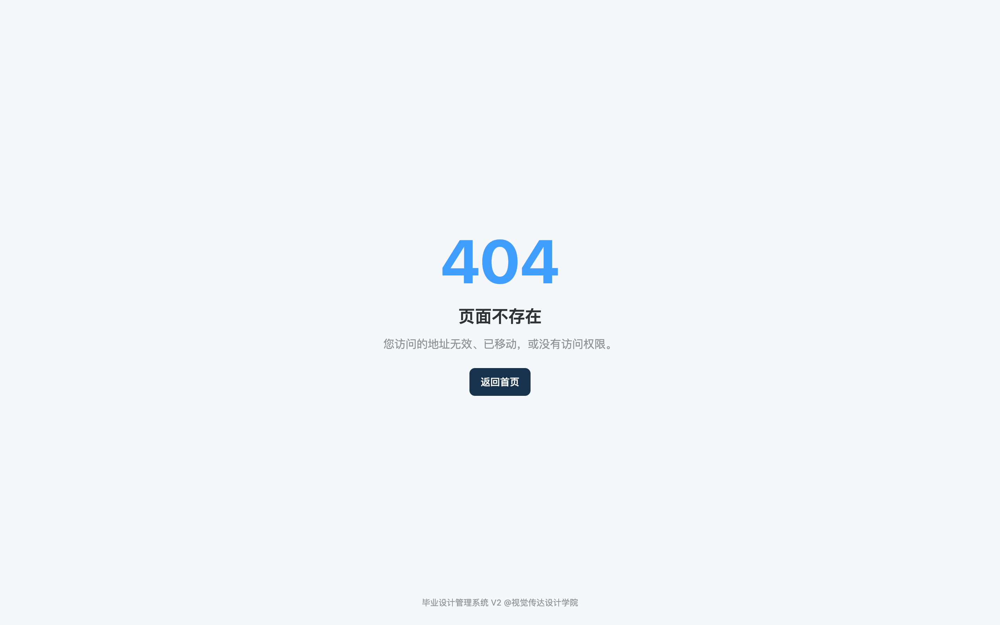
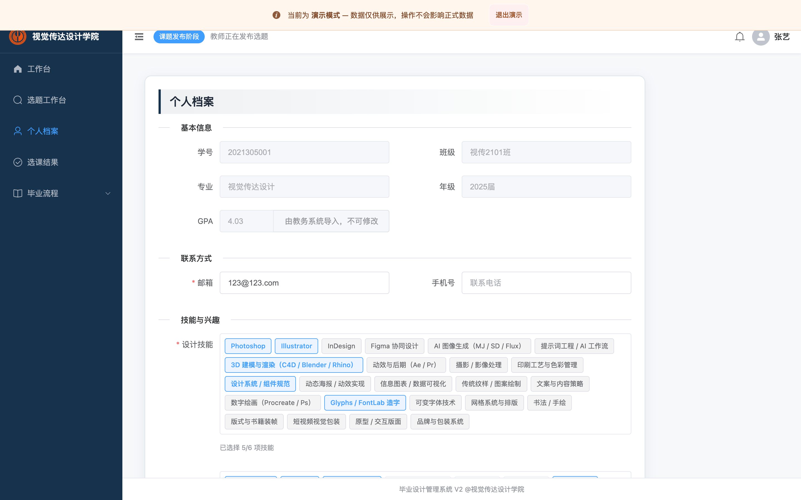
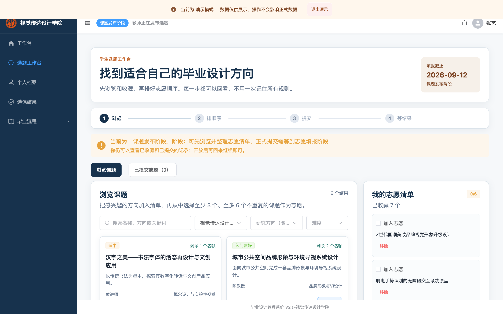
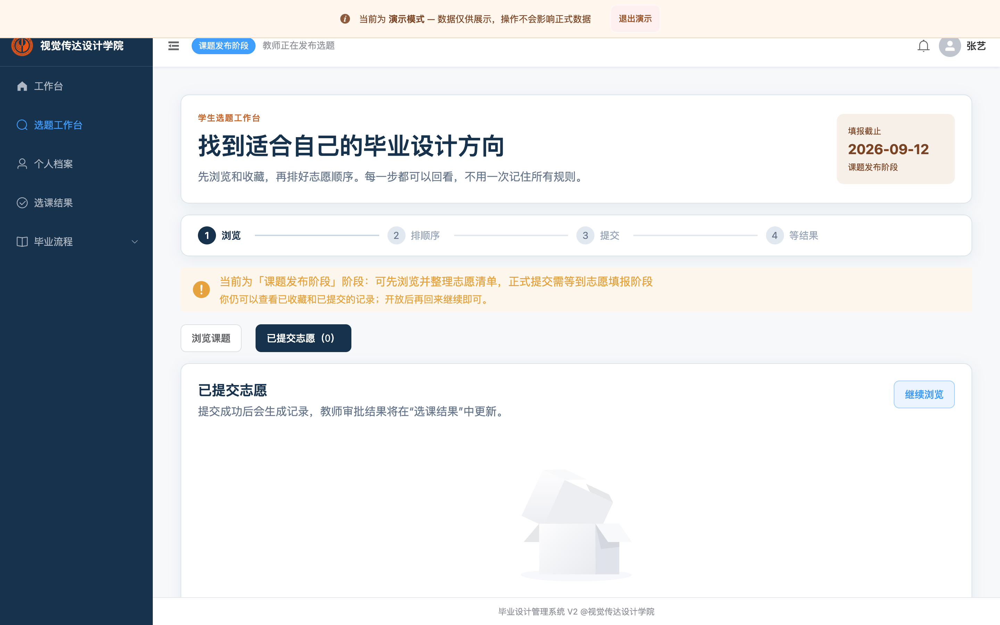
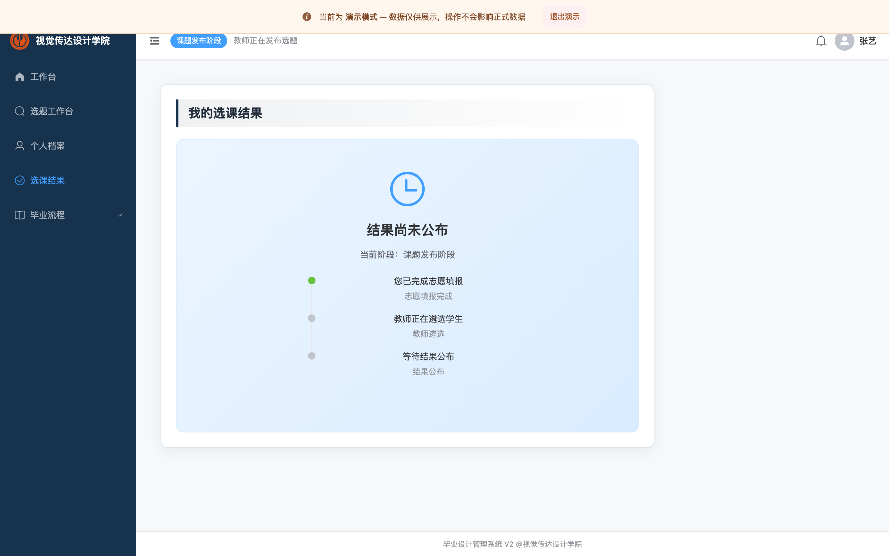
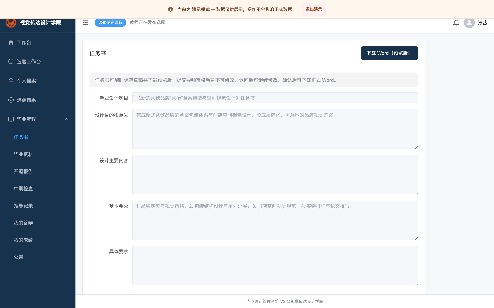
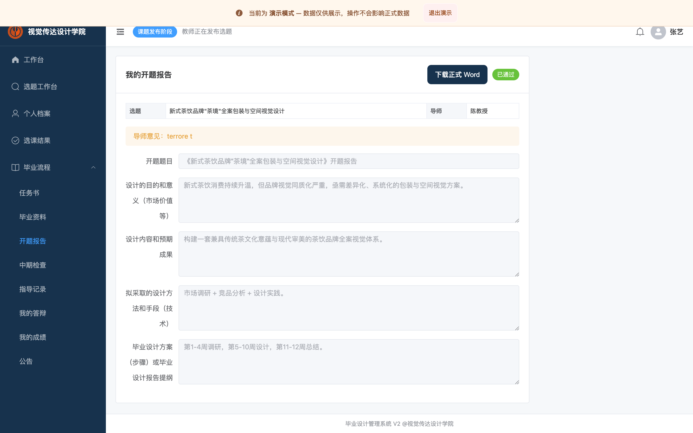
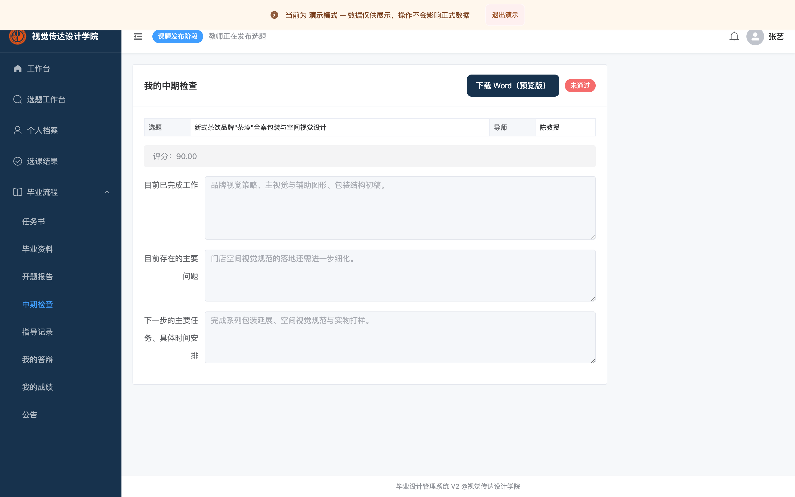

打开浏览器，输入系统地址（如 http://<服务器>/gpss/），进入登录页：

输入辅导员下发的学号/账号与密码（默认演示密码 123456），点击「登录」。
登录成功后会进入“首页”。首页可查看当前阶段、我的志愿数、待办提醒等：

适用：参与本科毕业设计的学生。演示账号
zhangyi / 123456；各“阶段”由学院管理员在选题周期中推进，未到对应阶段前，相关提交入口会提示不可用。
打开浏览器，输入系统地址（如 http://<服务器>/gpss/），进入登录页：
输入辅导员下发的学号/账号与密码（默认演示密码 123456），点击「登录」。
登录成功后会进入“首页”。首页可查看当前阶段、我的志愿数、待办提醒等：

提示：若提示“长时间未操作已自动退出”，重新登录即可。
首页点击「完善个人档案」，或在左侧菜单进入「个人档案」。
依次填写/核对：学号、班级、专业、届别、学分绩点（GPA）、技能标签、兴趣方向、自我简介等。

点击「保存」。完善的档案会用于教师遴选与结果名单展示。
说明：本系统采用“清单 → 排序 → 整批提交”的方式。每名学生最终需提交 3–6 个不重复 的志愿；提交后即冻结，进入录取流程。
首页点击「进入选题工作台」/「浏览课题」，进入选题工作台：

筛选课题：在搜索框按名称/方向搜索；可按“专业方向”下拉筛选你可见的专业（只列出系统允许你浏览的专业）；选择专业后“研究方向”随之联动。
查看课题详情：点击课题卡片的「查看详情」，弹出详情抽屉，可查看导师、专业方向、名额、简介、要求等。
加入清单：在卡片或详情里点「加入清单」。右侧“我的志愿清单”会累加；至少收藏后再从清单勾选为志愿。
整理志愿顺序：在清单中勾选“第X志愿”，拖动排序（第 1 行为第一志愿、最优先）。每个课题最多出现在一个志愿位置，总志愿数为 3–6 个。
确认并提交志愿：点击「确认并提交志愿」，核对顺序后确认。成功后跳转结果页并生成提交凭证。
查看“已提交志愿”记录：工作台上方「已提交志愿」标签页，或首页「我的志愿」：

首页点击「查看选课结果」（或左侧“我的选课结果”），查看是否被录取、录取课题、导师：

若显示“未录取/调剂中”，可在调剂阶段前往「调剂补录」选择仍有名额的课题并提交调剂申请。
需先被正式录取，且管理员将周期推进到“任务书”阶段。
左侧菜单进入「任务书」，页面展示你的任务书填写表：

依次填写：设计目的和意义、设计主要内容、基本要求、具体要求、阶段工作计划（每阶段选月份）等，标题默认取课题名。
点击「保存草稿」可暂存；确认无误后点击「提交」（提交后进入“待教师确认”）。
教师确认后状态变为“已确认”，可点击「下载正式 Word」导出任务书文件；若教师退回修改，按退回意见修改后重新提交。
前置条件：任务书已被导师确认。
左侧进入「开题报告」，填写：设计的目的和意义、设计内容和预期成果、设计方法和手段、设计步骤/报告提纲：

保存草稿或点击「提交」。提交后由指导教师审核（通过/退回修改/拒绝）。
在页面查看审核结果与导师意见：
前置条件：开题报告已审核通过。
左侧进入「中期检查」，填写：目前已完成工作、存在的主要问题、下一步任务与时间安排：

保存草稿或点击「提交」，等待导师评分并评价（通过/不通过/退回修改）。
中期“不通过”仅代表本环节结果，不会影响你开题报告已有的通过状态；按要求整改后可重新提交。